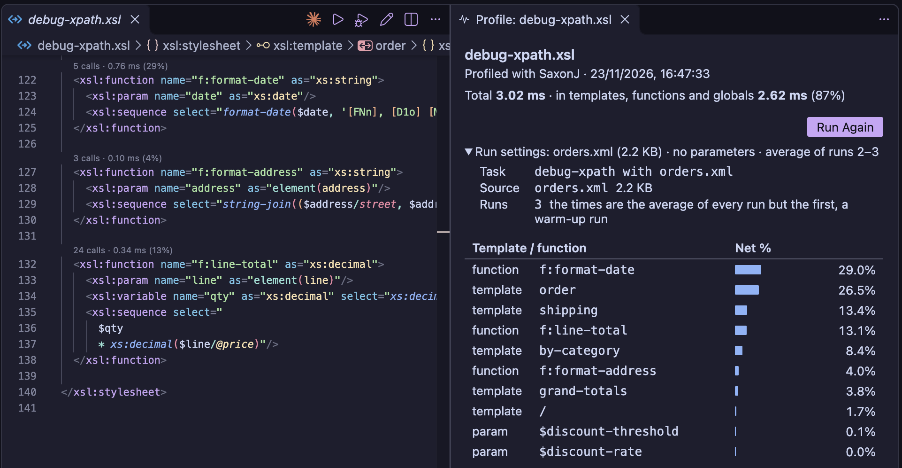
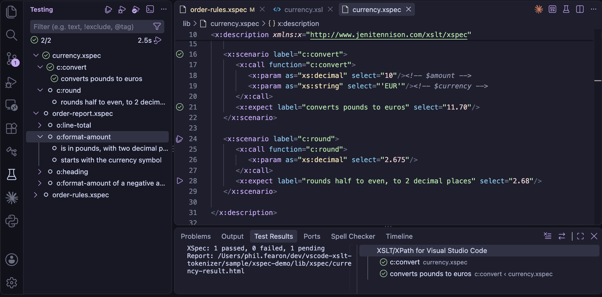
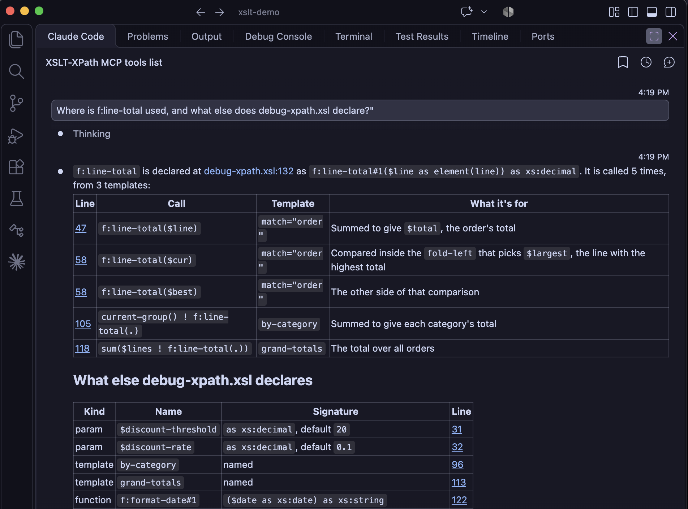

An XSLT editor for today
An XSLT editor used to be incorporated within a large standalone XML IDE. Today it can be a free extension within a development environment most users are familiar with. DeltaXignia's XSLT/XPath extension for Visual Studio Code is an XSLT editor first: it understands XSLT 3.0 and XPath 3.1, the XSLT 4.0 and XPath 4.0 features in Saxon 13, XSpec and Schematron, and it runs, debugs and profiles stylesheets with Saxon. VS Code is the host - and it brings Git, a terminal, themes and a large ecosystem with it.
It is also an editor for the way XSLT is written now. Many developers work with an AI coding assistant beside them, and what it drafts still has to be right: checked, run, tested and understood by the person responsible for it. The extension is designed for the two to work together. The assistant is given the same linter, Saxon setup and debugger that you use, so its changes are checked as yours are - and you have the same checks, navigation and debugger to read, question and correct what it wrote.
Checks that understand the language structure
The linter checks a stylesheet as you type, including the XPath inside attributes and text value templates: misspelled functions, wrong argument counts, undeclared variables, and the mistakes that otherwise only appear when a transformation runs. Quick fixes, completion for the XSLT in front of you and navigation - go to a declaration, find every reference, a call hierarchy - work across imports, includes and packages.
A debugger that steps into XPath
Set a breakpoint, run the stylesheet with SaxonJ - any edition, including Saxon-HE - and step through templates, functions and even the parts of a multi-line XPath expression, with the variables, the context item and the output written so far beside you. Step back as well as forward, and from the output go to the instruction that wrote it.

Stepping through an XPath expression in the debugger.
See the debugger in the user guide for the details.
Profile, then test
With Saxon-PE or Saxon-EE, the profiler shows the time of each template, function and global variable, with the times above the declarations in the editor.

Profiling a stylesheet: each template and function's calls and time shown above its declaration, and the slowest first in the report.
Tests are not an afterthought. XSpec is given equal footing with XSLT, as a
first-class language that extends it: XSpec files are checked as you edit them, with completion and hover
help, and you can move freely between a test and what it tests, in both directions. Go to Definition on an
x:call opens the function or template under test, and Find All References on that function or
template lists the scenarios that cover it, so you can see what is tested and what isn't. Rename a function
and its uses in the XSpec files change with it. Tests run from the Test Explorer, for stylesheets and for
Schematron, with each failure's expected and actual results side by side, and can be debugged in the same way.

XSpec tests in the Test Explorer, beside the XSpec file. Debug breakpoints can be added here too.
It is the same picture the AI assistant gets: when it looks up a function's references, the XSpec files that test it are listed with the rest, so it can find the tests for what it is changing, and it checks the XSpec files with the same linter. A change that isn't covered by a test is as visible to it as it is to you.
XSLT 4.0 today
The extension supports the XSLT 4.0 and XPath 4.0 features that Saxon 13 implements, such as record types, enumerations and JNodes for JSON, with completion, checks and refactoring for them - so a stylesheet can use them now, with the same editor and the same tools.
Working with an AI assistant
An AI coding assistant is only as good as what it can see. The extension's MCP server gives assistants such as GitHub Copilot and Claude Code tools that use the same linter, Saxon setup and debugger as you do: they can check a stylesheet, find a declaration, try an XPath expression on your XML and run your stylesheet the way Quick Run does - so what an assistant writes is checked as it would be for you.
The extension also includes skills for XSLT and XPath, XSpec tests and Schematron: sets of instructions that tell an assistant how to use these tools together - to look up what a module already declares before writing a second copy of a function, to check each change, and to treat a failing test as a question about the stylesheet or the expectation, not something to change until it passes.

Asked where a function is used, Claude Code answers from the extension's MCP tools: every call, with its line and template, and everything else the stylesheet declares - without running or reading the stylesheet by hand.
Try it
The extension is free. Install it from the Visual Studio Code Marketplace, open a folder with some stylesheets, and see the user guide for what to do next, or what's new in release 2.2.